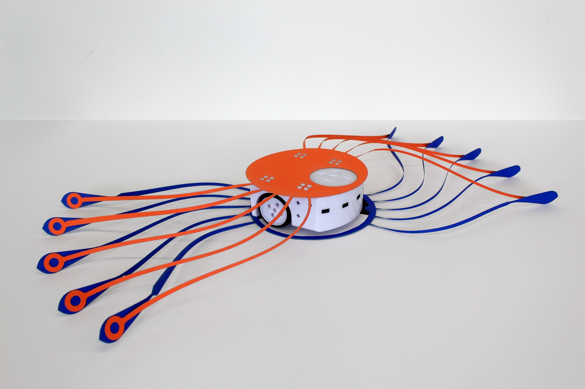
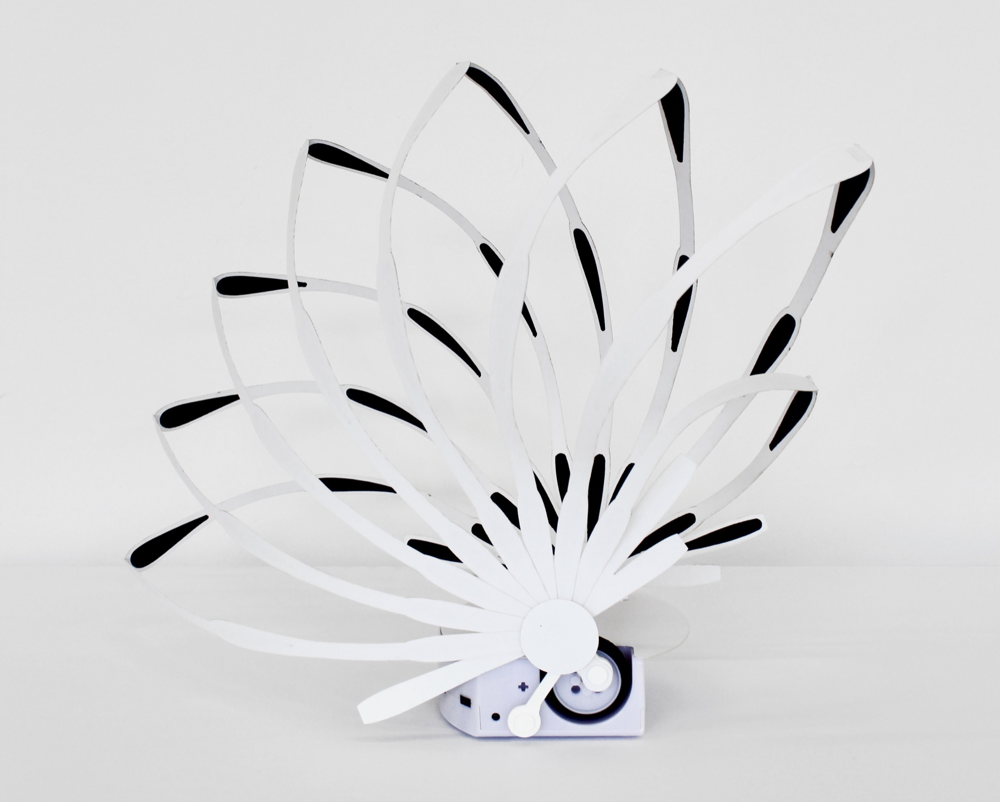
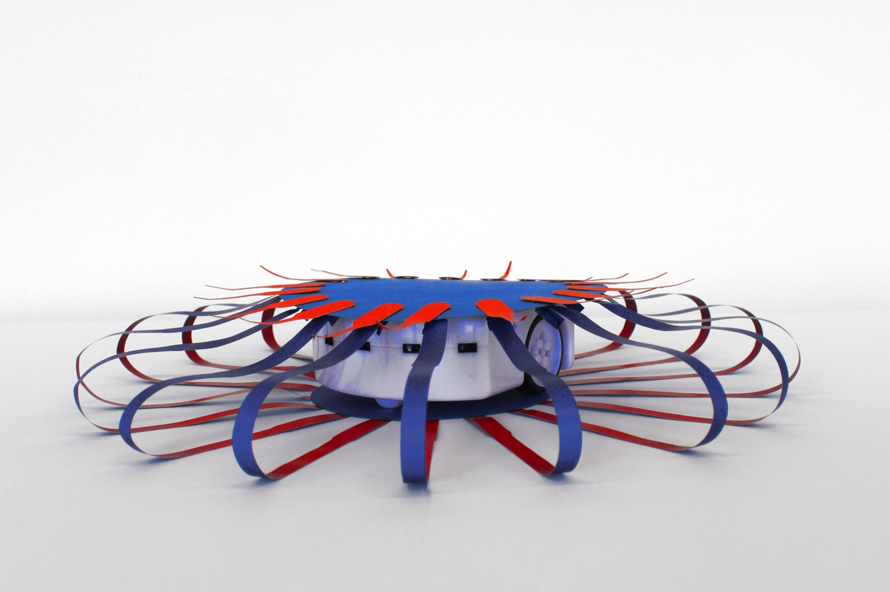
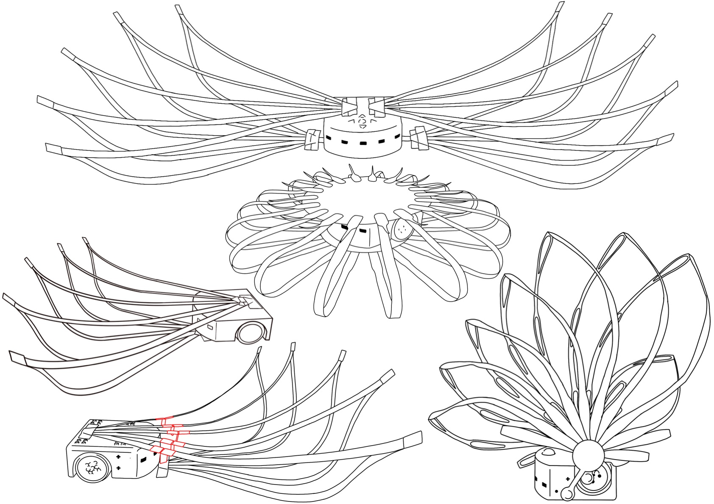

Spring 2024 · Semester project
Designing Costume Behaviors
Giving the Thymio educational robot new expressive behaviours, so its costumes react to touch, motion and proximity.
- MOBOTS group, EPFL
- In collaboration with designer Léa Pereyre
- Code on GitHub
Overview
The Thymio is an open-source educational robot developed at EPFL. Costumes designed for it already produced striking aesthetic results with simple movements. This project explored how to make better use of Thymio’s sensors and more advanced programming, while keeping the aesthetic and educational spirit of the original.
Approach
- Studied each sensor (proximity, accelerometer, sound, …) in isolation to understand its capabilities.
- Paired sensors with costume designs to create behaviours that make sense for each costume.
- Developed each behaviour in Python first, for full control.
- Ported the behaviours to VPL3, Thymio’s visual programming language.
- Translated them to Blockly for even broader accessibility.
This multi-platform approach means the behaviours can be understood and modified by users at every level, from beginners using visual programming to advanced users in Python.
Behaviours
Costume designs




Outcome
The project showed how aesthetic design and richer programming can be combined in educational robotics. Because the behaviours exist in Python, VPL3 and Blockly, learners at all levels can use them, while still learning core robotics concepts: sensor integration, behaviour programming and iterative design.